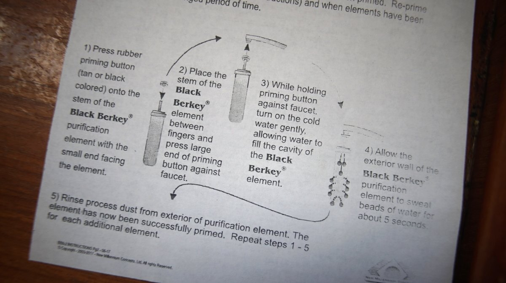

gravity water filter

11.02.21
Victoria BC, Canada.
We've never had a good passive filtration system aboard. Whenever we collected rain water in the past, we would filter dirt with a tea strainer and process the water with bleach. We could not drink this water, but kept it to clean dishes, or clothes. It took us a while to find a design we liked and that didn't require pressure. Enter, the gravity filter!
Our first idea was to make a 3 bucket water filtration system, but we could not negotiate space and weight aboard for such a system. A pot-type ceramic water filter is a design to consider, but the brittle nature of ceramic materials makes it a poor candidate for a boat.

After doing a lot of research, we bought a pair of black Berkey purification element filters. These filters remove:
- chlorine (inc. chloramines
- heavy metals
- pharmaceuticals
- VOCs
- parasites,
- viruses
- pathogenic bacteria
- herbicides
- pesticides
- etc...
...and hundreds of other contaminants from the water without removing the beneficial minerals, and without the use of any electricity. Each element is designed to purify approximately 3,000 gallons of water before needing replacement, so they last a long, long time. They're not the cheapest, but considering what they're able to filter, and how long they last we think it is worthwhile. For a cheaper, personal filter, consider something like the Sawyer Mini filter.
Berkey sells ready-made filter housings that use two filters at once, they're nice but very expensive. We read of people buying the filter elements and DIY-ing the filter housing. It is very simple to make, and the design depends on the amount of water you wish to filter.
Our filter housing design is tall, and narrow. It can't hold much water, but that is fine. As we often say, we lack space aboard Pino, and we needed something that we can secure, and put away quickly in rough seas. We plan to filter the water as we need it. After our design sees some use, we'll report back on our findings.
Building the filter housing
We bought a section of ABS piping at the hardware store that has a 76.2 mm (3 in) diameter, and a length of 61 cm (2 ft), along with 3 end fittings: a permanent 'cap', a pipe fitting that sits overtop with an inside thread, and a plug that screws into the top with the thread. The plug is to keep dust out of the filter when it is not in use.
We drilled a hole with a 16 mm (7/16") drillbit through the center of the cap. Then, we inserted the black berkey filter with the rubber grommet between the inside of the cap and the filter, and tightened the wingnut on the shaft of the filter on the outside of the cap.

Our pipe was already cut to size. If cutting a pipe, it is necessary to deburr the cut end of the pipe to remove raised edges and unwanted pieces of material. To glue the cap to the pipe, we applied some Oatey fast-set ABS yellow solvent cement (for non-pressured ABS piping) on the outside of the long pipe, and on the inside of the cap and joined the two pieces together, making sure the pipe reaches the bottom of the cap fitting. We applied glue to the fitting at the other end too. The pipe cement creates a deep, fusion between the rigid ABS pipes and fittings. We let the whole thing dry a while.

We inserted a short length of 12.7 mm (1/2 in) diameter hose directly on the shaft of the filter, with a spigot at the end to control the outflow of water.

We wrapped a length of red paracord around the top, just below the pipe adapter. We might wrap more around the base of the housing to keep it from swinging around. Our plan is to set the housing over a jerry can and let it filter the water passively. We plan to catch water in another container and to process it through a tea strainer to remove solids (if any) before transferring water into it.
The filters need to be primed before first use, or if the filters are left uncovered and dry out. Instructions come with the filter cartridges on priming, as well as a small "priming button".
